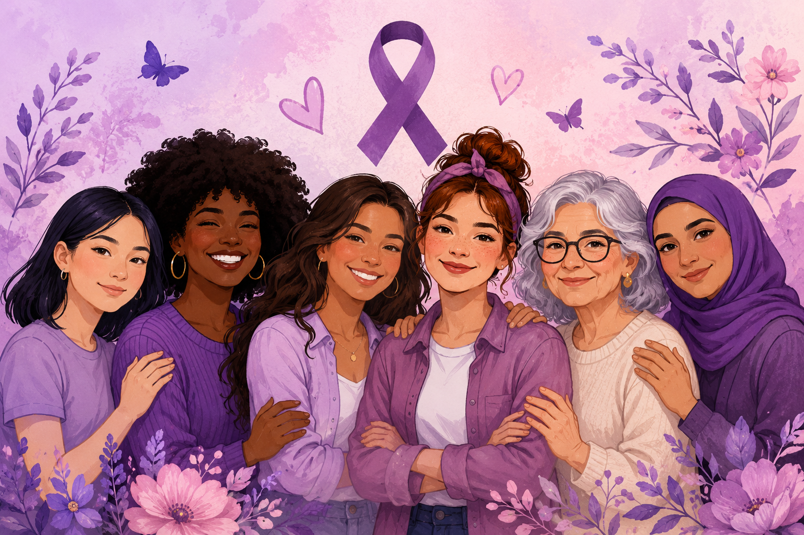

Vozes Contra a Misoginia

O que é Misoginia?
Misoginia é o preconceito, a discriminação ou a aversão contra as mulheres.
Consequências
- Desigualdade social
- Violência contra a mulher
- Problemas emocionais
- Preconceito no ambiente de trabalho
- Baixa autoestima das vítimas
Como Combater
- Educação e conscientização
- Respeito às diferenças
- Denúncia de casos de violência
- Promoção da igualdade de gênero
- Apoio às vítimas
Conclusão
Combater a misoginia é fundamental para construir uma sociedade mais justa,
igualitária e respeitosa. A conscientização e o respeito são ferramentas
essenciais para promover mudanças positivas.